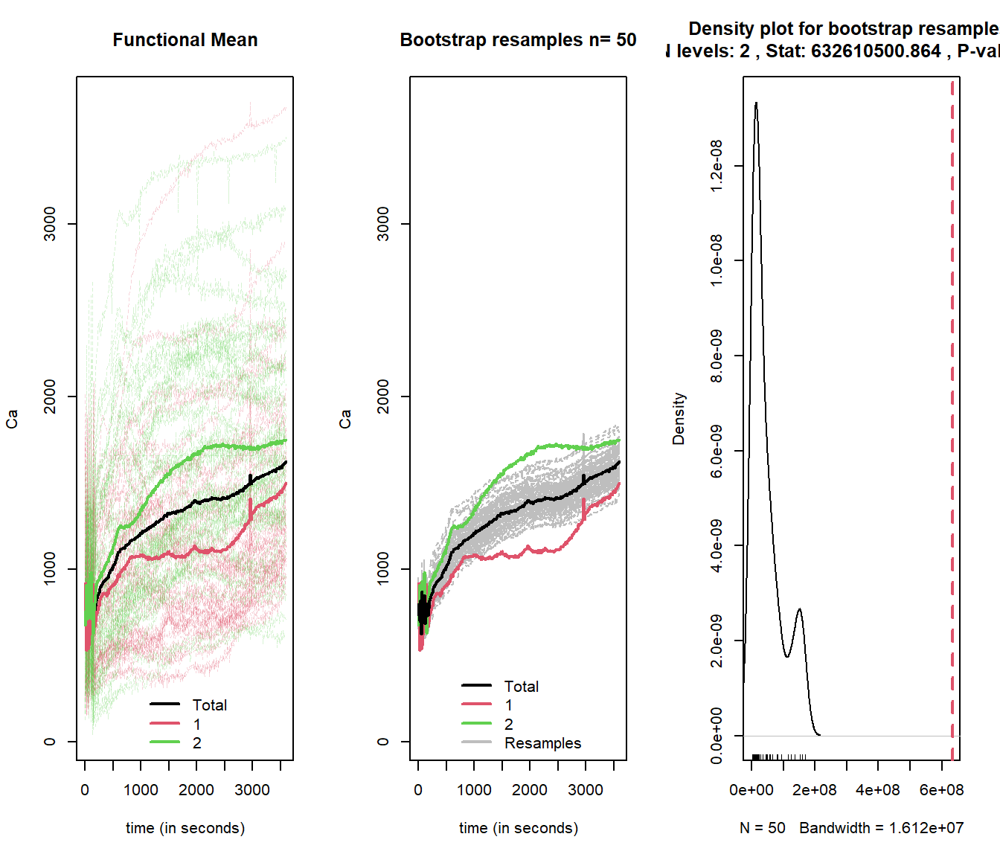

Chapter 6 Functional ANOVA
6.1 One–way anova model for functional data, A. Cuevas, Febrero, and Fraiman (2004)
One–way anova model for k independent samples of functional data. The function contrasts the null hypothesis of equality of mean functions of functional data based on the an asymptotic version of the anova F–test. The function returns the p–value of test using one–way anova model over nboot runs.
data(MCO)
grupo<-MCO$classintact
datos<-MCO$intact
res=fanova.onefactor(datos,grupo,nboot=50,plot=TRUE)
## [1] 06.2 Functional ANOVA with Random Project, JA Cuesta-Albertos and Febrero-Bande (2010)
The procedure is based on the analysis of randomly chosen one-dimensional projections. The function tests ANOVA models for functional data with continuous covariates and perform special contrasts for the factors in the formula.
## [1] "learn" "test" "classlearn" "classtest"# A MV matrix obtained from functional data
data=as.data.frame(phoneme$learn$data[,c(1,seq(0,150,10)[-1])])
group=phoneme$classlearn
n=nrow(data)
group.rand=as.factor(sample(rep(1:3,len=n),n))
RP=c(2,5,15,30)
#ex 1: real factor and random factor
m03=data.frame(group,group.rand)
resul1=fanova.RPm(phoneme$learn,~group+group.rand,m03,RP=c(5,30))
summary(resul1)## - SUMMARY fanova.RPm -
##
## p-value for Bonferroni method
## group group.rand
## RP5 0 0.78202
## RP30 0 1.00000
##
## p-value for False Discovery Rate method
## group group.rand
## RP5 0 0.78202
## RP30 0 0.89286#ex 2: real factor with special contrast
m0=data.frame(group)
cr5=contr.sum(5) #each level vs last level
resul03c1=fanova.RPm(data,~group,m0,contrast=list(group=cr5))
summary(resul03c1)## - SUMMARY fanova.RPm -
##
## p-value for Bonferroni method
## group C1.group C2.group C3.group C4.group
## RP16 0 0 0 0 0
##
## p-value for False Discovery Rate method
## group C1.group C2.group C3.group C4.group
## RP16 0 0 0 0 0#ex 3: random factor with special contrast. Same projs as ex 2.
m0=data.frame(group.rand)
zz=resul03c1$proj
cr3=contr.sum(3) #each level vs last level
resul03c1=fanova.RPm(data,~group.rand,m0,contrast=list(group.rand=cr3),zproj=zz)
summary(resul03c1)## - SUMMARY fanova.RPm -
##
## p-value for Bonferroni method
## group.rand C1.group.rand C2.group.rand
## RP16 0.62644 0.42964 1
##
## p-value for False Discovery Rate method
## group.rand C1.group.rand C2.group.rand
## RP16 0.62644 0.22874 0.97827References
Cuesta-Albertos, JA, and M Febrero-Bande. 2010. “A Simple Multiway Anova for Functional Data.” Test 19 (3): 537–57.
Cuevas, A., M. Febrero, and R. Fraiman. 2004. “An Anova Test for Functional Data.” Comput. Statist. Data Anal. 47 (1): 111–22. http://www.sciencedirect.com/science/article/pii/S016794730300269X.